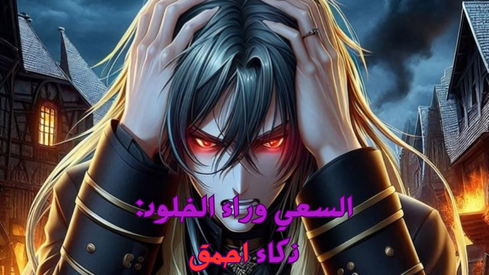
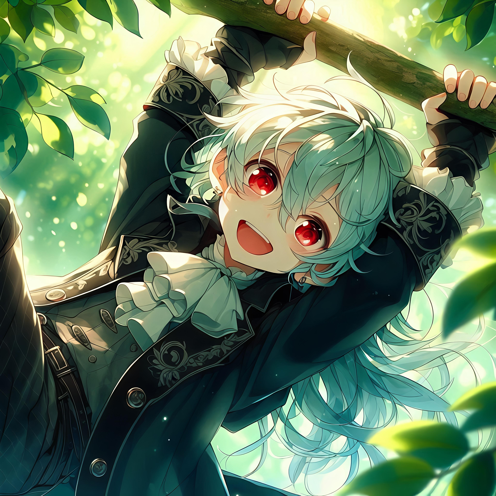
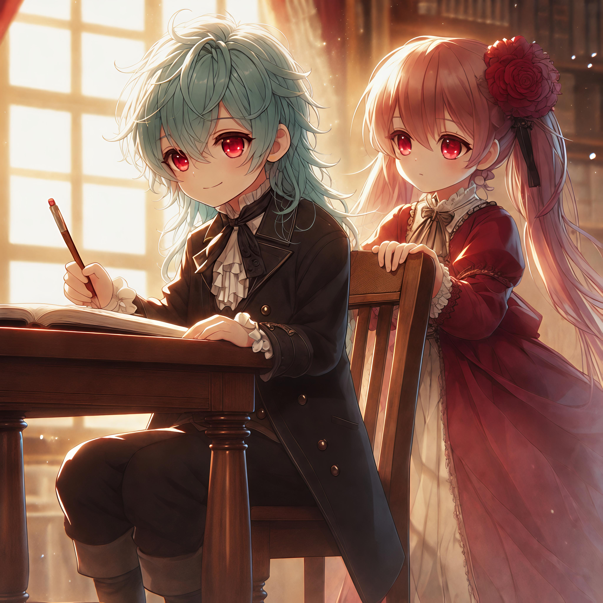
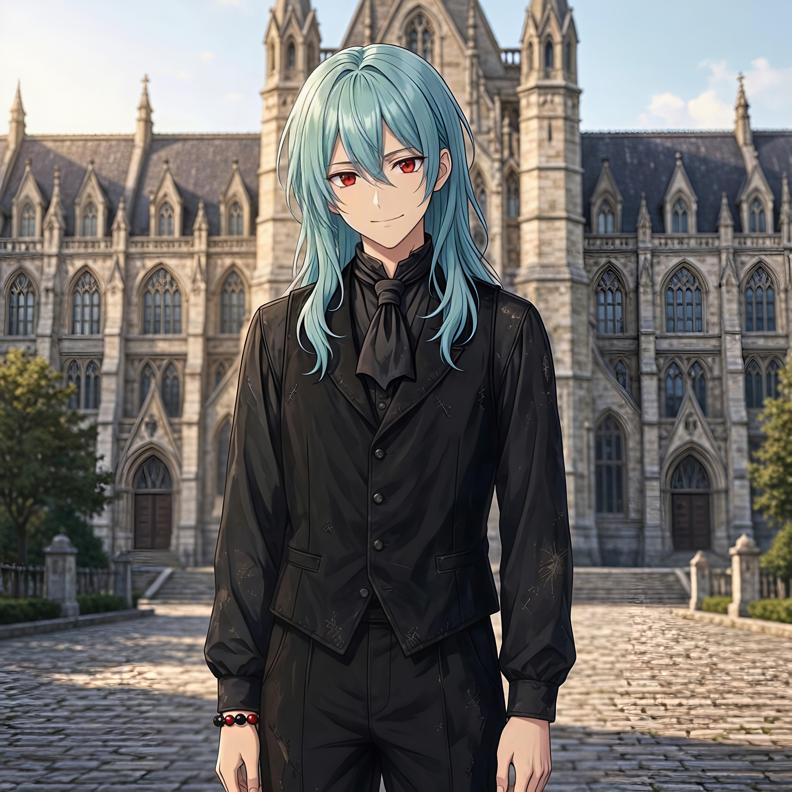

[قبل 326 عامًا من أحداث الملاكوت السابع] في قرية صغيرة منعزلة، محاطة بالأشجار، سُمع صوت بكاء طفل عند باب دار الأيتام. فتحت إحدى العاملات الباب، لتجد رضيعًا أمامه. التقطته ونظرت حولها، لكن لا أثر لأي أحد، فدخلت الدار وأغلقت الباب. وضعت العاملة الرضيع على سرير الأطفال، ثم جلبت زجاجة حليب وأرضعته. وقعت عيناها بعدها على دبوس مثبت على صدره، فقرأت ما كُتب عليه: "راياتو" [بعد سبع سنوات] تدخل العاملة إلى باحة الدار، ومعها فتاة صغيرة تتمسك بملابسها بتوتر. العاملة (منادية)- راياتو! فجأة، يتدلى صبي صغير بشعر ازرق يميل للصفار وعيون حمراء من غصن شجرة، وعلى وجهه ابتسامة واسعة. راياتو (ببهجة)- إنها الأخت فيري! ينزل راياتو من الشجرة ويجري نحو فيري. فيري- كم مرة أخبرتك ألا تتسلق الأشجار؟ ستؤذي نفسك. راياتو (يضحك برفق)- آسف، آسف. فيري- على أي حال، راياتو، هذه مورينا. إنها في نفس عمرك، لذا أرجو أن تنسجما معًا. راياتو (يبتسم)- رائع! أخيرًا هناك من يمكنني اللعب معه بينما يكبر باقي إخوتي. يمسك راياتو بيد مورينا ويسحبها معه إلى الباحة. راياتو (بابتسامة دافئة)- هيا لنلعب معًا! ترفع مورينا رأسها لتنظر إلى راياتو المبتهج، فتلمع عيناها بدفء، بينما تنسحب معه، وسط مراقبة من الأخت فيري التي تبتسم. في الليل، تتقلب مورينا في نومها قبل أن تنهض بانزعاج، وتنظر نحو سرير راياتو لتجده فارغًا. تنزل مورينا من سريرها، وتتفقّد الغرفة، لكن لا يوجد أحد سواها وثلاثة أطفال رُضّع. فتغادر الغرفة ببطء، وتتبع الممر، حتى تجد ضوء غرفة القراءة مضاءً. تدخلها بتردد، لتجد راياتو مستلقيًا على الأرض، يقرأ كتابًا بانغماس شديد. مورينا (بتردد)- ر-راياتو..؟ يرفع راياتو وجهه من الكتاب نحو مورينا، بنفس الابتسامة المبتهجة المعتادة. راياتو- مورينا! تعالي، انظري هنا. هذا الكتاب مشوّق للغاية! تقترب مورينا ببطء، وتنظر إلى الكتاب بهدوء. مورينا (بخجل)- أنا... أنا لا أستطيع القراءة... راياتو (يشير إلى الأرض بجواره)- هيا هيا! لا بأس، أنا سأقرأ لكِ. تجلس مورينا على الأرض بجوار راياتو المستلقي، فيحمل راياتو الكتاب ويريها الغلاف. راياتو- انتظري! هذا هو "معجم التشريح العام". إنه يحتوي على معلومات عن تشريح عدد كبير من الحيوانات، ويوجد أيضًا فصل للبشر وأشباه البشر! مورينا (بتعجب)- تشريح؟ راياتو (ببهجة)- أجل! إنه كتاب عن الطب! مورينا- لماذا تقرأه؟ إنه يبدو مملًا... راياتو (بدهشة)- ماذا!؟ ممل؟ إنه مليء بالمعلومات الشيقة! أعني، هل كنتِ تعرفين أن للأخطبوط ثلاثة قلوب!؟ مورينا (بتعجب)- أخطبوط؟ ما هذا؟ راياتو (يضحك)- لا تعرفين الأخطبوط؟ إنه حيوان بحري لديه ثماني أذرع! إنه حقًا حيوان بديع! فجأة، ينفتح الباب وتدخل منه الأخت فيري، تبدو منزعجة. فيري (عيون نصف مغلقة)- راياتو، ما الذي تفعله في هذه الساعة؟ ولماذا ترفع صوتك هكذا؟ راياتو (ينهض بسرعة)- الأخت فيري!؟ أنا... لقد كنت أقرأ. فيري (تمسك بطرف أنفها)- هذا ليس وقت القراءة، أنت تعرف ذلك. تفتح الأخت فيري عينيها بصعوبة، لتتفاجأ حين تقع عيناها على مورينا. فيري- مورينا!؟ ماذا تفعلين هنا أنتِ أيضًا؟ مورينا (بتوتر)- أ-أنا استيقظت فجأة، ولم أجد راياتو في سريره، لذا... فيري- حسنًا، حسنًا، هذا يكفي. أنتما الاثنان إلى السرير الآن، أريد العودة للنوم. راياتو (يسحب مورينا)- حاضر، حاضر أيتها الأخت فيري. يتجه راياتو ومورينا إلى أسِرّتهما. تبدأ مورينا في النوم، حتى تسمع صوت همس. راياتو (يهمس)- هاي مورينا... هاي. تنهض مورينا برفق، وتنظر نحو راياتو. راياتو (يبتسم)- غدًا سأساعدكِ في تعلم القراءة، اتفقنا؟ تومئ مورينا رأسها بتردد، فيضحك راياتو برفق ويخلد للنوم، فتلحقه الأخرى. تمر الأيام بسلام-إذا تجاهلنا تهور راياتو وصراخ الأخت فيري-، ويوفي راياتو بوعده في تعليم مورينا القراءة والكتابة-لم تكن العملية سلسة، لكنها مستمرة-. في تلك الفترة، نما إعجاب مورينا بشخصية راياتو المتهورة والحنونة والشغوفة في الوقت ذاته. كانت تشاهده يتعرض لإصابات من حين لآخر أثناء اللعب، وأيضًا حين مرضت الأخت فيري لأسبوع، كان راياتو يرعاها باهتمام، ولا يهمل إخوته الرضّع في الميتم، ولا تعليم مورينا. وحين يتسلل ليلًا إلى المكتبة لقراءة كتب الطب، ينتهي به المطاف دائمًا بتوبيخ من الأخت فيري لتجاهله موعد نومه. وفوق كل ذلك، لم تفارق الابتسامة محيّاه طوال تلك الأيام. مرت الأيام بسرعة، حتى جاء عيد ميلاد راياتو الثامن، فتجمع أهل الميتم للاحتفال به. جمعٌ بسيط مكوّن من راياتو، ومورينا، والأخت فيري، وثلاثة رُضّع... لكنه كان جمعٌ سعيد. راياتو (ببهجة)- أخت فيري! هل يمكنني الذهاب إلى المدرسة الآن؟ فيري (تضحك برفق)- أجل يا راياتو، سنذهب غدًا لتسجيلك. مورينا (بقلق)- مدرسة؟ أخت فيري، هل سيذهب راياتو؟ فيري (تربت على رأس مورينا)- لبعض الوقت فقط، لا تقلقي. مورينا (بحزن)- لكن... راياتو (مقاطعًا)- هل يمكن أن تأتي مورينا أيضًا؟ فيري (بحزن خفيف)- راياتو، أنت طفل ذكي. يمكنك أن ترى أن الميتم لا يملك ما يكفي من المال لإرسال شخصين إلى المدرسة. كما أن مورينا لا تملك اهتمامًا بالطب مثلك. مورينا- لا بأس، أنا لا أريد الذهاب. أنا فقط... راياتو (معانقًا مورينا)- لا تقلقي، لن أغيب طويلًا. سأأتي للزيارة باستمرار. مورينا (بتردد)- زيارة...؟ فيري- أجل، لا توجد مدرسة في القرية، لذا على راياتو الذهاب إلى المدينة. مورينا- لكن... كيف سيبقى راياتو وحيدًا؟ راياتو (بابتسامة دافئة)- لا تقلقي، يمكنني الاعتماد على نفسي. مورينا- لكن... فيري- هناك دار أيتام هناك، مالكتها صديقة لي. سيبقى معها. لم تنم مورينا تلك الليلة. وراياتو أيضًا... لكن لأسباب مختلفة. في اليوم التالي، تبقى مورينا في فراشها لفترة طويلة، حتى سمعت الأخت فيري تناديها. فيري (منادية)- مورينا! تعالي يا فتاة! تنهض مورينا من فراشها وتتجه نحو الصوت خارج الغرفة. وعند باب الميتم، وقفت الأخت فيري وراياتو وامرأة من القرية. مورينا- العمة تاهي؟ تاهي (تبتسم)- كيف حالكِ يا صغيرة؟ فيري- الرحلة إلى المدينة طويلة قليلًا، ولن أعود قبل الغد، لذا العمة تاهي ستهتم بالدار حتى عودتي. راياتو (ببهجة)- مورينا! أنا ذاهب إلى المدرسة الآن. سأعود في أقرب فرصة للزيارة، اتفقنا؟ مورينا (بحزن طفيف)- اتفقنا... بهذا، انطلق كلٌّ من راياتو والأخت فيري في طريقهما، بينما تراقبهما مورينا من الدار، والحزن بادٍ على محيّاها. يمر اليوم ببطء شديد. تنظر مورينا خارج النافذة أغلب الوقت في شرود، بينما تواجه العمة تاهي صعوبة مع الرضّع، لذا لم تنتبه إلى حالتها. بعد فترة، تتجه مورينا إلى المكتبة، وتبحث وسط الكتب حتى تلتقط أحد الكتب التي كان يقرأها راياتو: "معجم التشريح العام". تقلب مورينا الصفحات، تنظر إلى الصور، وتلتقط بعض الجمل، لكن بلا فائدة، عقلها يرفض استيعاب ما تراه، "ما سر حبه لهذه الأشياء؟" قالت في ذهنها، بينما تحك رأسها، قبل أن تغلق الكتاب وتعيده إلى مكانه. حلّ الليل، ووضعت العمة تاهي الرضّع للنوم بعد معاناة. تاهي (مرهقة)- الأخت فيري حقًا مذهلة. أن تمر بكل هذا كل يوم، وتبقى في نشاطها المعتاد... تتسلق مورينا سريرها وتضع رأسها على الوسادة، وقبل أن تشعر، كانت قد غرقت في نومٍ عميق. في الصباح التالي، تتأخر مورينا في الاستيقاظ. وحين تفتح عينيها، كانت ساعة الظهيرة قد حلّت بالفعل. تنهض من فراشها بصعوبة، بينما تحك عينها اليمنى، وتتجه نحو الحمام. وفي طريقها تمر على غرفة القراءة، وبابها مفتوح جزئيًا، فتلمح شخصًا يقرأ بالداخل. مورينا (في ذهنها)- العمة تاهي لا تجيد القراءة... من بالداخل؟ تدفع مورينا الباب بدافع الفضول، وما إن تقع عيناها على القارئ حتى تتسعان من الدهشة. كان الجالس أمام المكتب، يتصفح أحد المجلدات الكبيرة... راياتو. راياتو (يرفع رأسه)- أوه، مورينا. صباح الخير، لقد أطلتِ في النوم اليوم حقًا. مورينا (بنوع من الصدمة)- راياتو؟ ألم تذهب إلى المدينة مع الأخت فيري؟ الأخت فيري (من خلفها)- أجل، ذهبنا، لكن وجدنا دار الأيتام الخاصة بصديقتي قد أُغلقت بسبب مشاكل مادية، وبالطبع لن أترك طفلًا ذا ثماني سنوات وحده في سكن، لذا عدنا. مورينا (بنبرة حزينة)- لكن... راياتو كان يريد الذهاب إلى المدرسة بشدة... راياتو (ببهجة)- لا تقلقي يا مورينا، فقد اتفقنا مع المدير أن أدرس هنا في الدار، وآتي فقط للاختبارات، لذا لقد سُجلت بالفعل. مورينا- إذًا... أنت ستبقى هنا؟ راياتو (بابتسامة واسعة)- أجل! تندفع مورينا فجأة وتعانق راياتو بشدة. الأخت فيري (بابتسامة)- أوه، ألَن أحصل أنا أيضًا على عناق؟

تمر السنوات بنوع من الهدوء. يدرس راياتو بجد، وتراقبه مورينا بفضول، بينما تهتم الأخت فيري بالرضّع الثلاثة. وفي طرفة عين، تمر عشر سنوات. صار راياتو شابًا يافعًا، ولم تفارق ابتسامته البشوشة وجهه. وبانت على الأخت فيري آثار الكبر. فرغم أنها لا تزال في الأربعينيات من عمرها، فإن مسؤولية الميتم أشابت رأسها، وأجعدّت وجهها مع مرور السنين. أما الرضّع، فقد صاروا أطفالًا يركضون في كل أنحاء الميتم، محافظين على كون ممراته ممتلئة بأصوات الضحكات والمرح، وأحيانًا صوت انكسار الزجاج، الذي يعقبه صمتٌ لحظي، قبل أن يقطعه صوت توبيخ الأخت فيري. أما مورينا، فنمت هي الأخرى من طفلة كثيرة الاعتماد على الآخرين، إلى شابة يافعة تحمل على كتفيها مسؤولية رعاية دار الأيتام ومساعدة الأخت فيري، بالإضافة إلى ابتسامة بشوشة، مشابهة لابتسامة راياتو، بدأت تستقر على وجهها مع مرور السنين. في أحد الأيام، بينما كانت مورينا تنظف حول مدخل الدار، وصل ساعي بريد يحمل خطابًا بعنوان الدار، سلمه إلى مورينا ثم رحل. تنظر مورينا إلى الخطاب في يدها، فتجد أنه مرسل لراياتو من "أكاديمية جرينهيڤن للطب". في غرفة القراءة، كان راياتو جالسًا يقلب صفحات أحد المجلدات الكبيرة التي اعتاد على قراءتها منذ صغره، عندما دخلت عليه مورينا والخطاب في يدها. مورينا (دون النظر إليه)- جاءك خطاب من أكاديمية تُدعى "جرينهيڤن للطب". راياتو (بحماسة واضحة)- هاتيه بسرعة! مورينا (تمد الخطاب له)- هدئ من روعك قليلًا... ما المميز في هذه الأكاديمية لتتحمس هكذا على أي حال؟ يفتح راياتو الخطاب على عجل، ويقرأ محتواه، بينما تتسع ابتسامته شيئًا فشيئًا. راياتو (ببهجة عارمة)- أجل! لقد قُبلت! ينهض راياتو من مقعده في سعادة غامرة، والخطاب في يده، فيعانق مورينا ويدور بها، قبل أن يتركها بسرعة ويركض خارج الغرفة، تاركًا مورينا في حالة من التعجب والحرج. في إحدى غرف الميتم، كانت الأخت فيري تجلس تحتسي الشاي، بينما تنظر من النافذة في هدوء، قبل أن يقطعه راياتو المتحمس الذي فتح باب الغرفة، والبهجة تملأ وجهه. راياتو- أيتها الأخت فيري! لقد قُبلت في الأكاديمية! فيري (بهدوء)- أي أكاديمية؟ لقد سجلت في العديد منها. راياتو (يرفع الخطاب أمامها)- جرينهيڤن! يكاد الشاي يسقط من يد الأخت فيري عند سماع الاسم. أكاديمية جرينهيڤن للطب هي أرقى مؤسسة تعليمية في العاصمة، ولا يدخلها سوى أبناء النبلاء، وقلة قليلة من العامة المتميزين للغاية بعد اجتياز اختبار بالغ الصعوبة. في الوقت ذاته، كانت مورينا لا تزال واقفة في مكانها، وجنتاها محمرتين، وعيناها متسعتين، بلا حراك. في الأيام القليلة التي تلت الخبر، كان راياتو في قمة سعادته بينما يحزم حقائبه—حقيبة واحدة لقلة ممتلكاته—، والأخت فيري لم تترك أذنًا في القرية إلا وتلت على مسمعها الخبر. الأطفال الثلاثة يدورون حول راياتو طوال الوقت، يسألونه عن الأكاديمية وعن العاصمة بحماسة. ووسط كل هذه الأجواء، كانت مورينا تتصرف بغرابة، خاصةً حول راياتو. فكانت تتجنبه، وتفضل المكوث وحدها لفترات طويلة على غير عادتها، وتتسلل ليلًا إلى خارج الدار دون علم أحد... أو هذا ما تظنه. فقد كانت سيئةً في التسلل منذ صغرها، لكن لم يسألها أحد عن خروجها، فاعتقدت أن أحدًا لم يرها. حتى جاء اليوم الموعود، وحان موعد مغادرة راياتو الدار إلى العاصمة لبدء صفحة جديدة في حياته. حمل راياتو حقيبته واتجه إلى باب الدار، حيث انتظرته الأخت فيري بعيون دامعة، والأطفال الثلاثة بنوع من الارتباك؛ حزينين على مغادرة أخيهم الأكبر، وفرحين لحصوله على ما يتمنى. تفقّد راياتو المكان بعينيه، باحثًا عن مورينا التي تسللت ليلة أمس، لكن يبدو أنها لم تعد بعد. لم يُخفِ راياتو نظرة الحزن في عينيه وهو يعانق الأخت فيري والأطفال قبل المغادرة. فيري (وسط دموعها)- سأفتقدك كثيرًا يا صغيري، إياك وقطع الرسائل والزيارات بين الحين والآخر. راياتو (بابتسامة دافئة)- لا تقلقي أيتها الأخت، لن أقطع أيًا منها. أحد الأطفال (بفضول)- أخي، متى ستعود؟ راياتو (يفكر)- لا أدري، عندما تسنح الفرصة بالطبع، سأعود فورًا. فيري- لا أصدق كم كبرت يا صغيري، لازلت أذكر عندما كنت في عمرهم. راياتو- أشكرك أيتها الأخت من كل قلبي على كل ما فعلته لأجلي. فيري- لا داعي للشكر يا صغيري. راياتو- ما خطبك اليوم مع "يا صغيري"؟ فيري (تضحك بخفة)- ماذا؟ أتظن أنك كبرت عليها؟ مهما كبرت، ستبقى فتاي الصغير. راياتو (بضحكة خفيفة)- على أي حال، أين هي مورينا؟ ألم تعد منذ الأمس؟ فيري (بنوع من الغضب)- تلك الحمقاء لا تنفك تتسلل للخارج، أتظن نفسها غير مرئية؟ لا أصدق أنها تفوّت لحظة رحيلك هكذا. راياتو- لا عليك أيتها الأخت، لابد وأن لها أسبابها. فيري- من الأفضل لها أن تكون أسبابًا مقنعة. يفتح راياتو الباب ويخطو خارجه، بينما تتوارى إلى ذاكرته الكثير والكثير من اللحظات التي عاشها داخل تلك الجدران. رغم ضيقها، وقلة حيلة أهلها، إلا أنها آوته حين تخلى عنه أبواه... أو أيًا كانت حقيقة الأمر، فهو لا يعرفها. وسط سيل الذكريات، تفر دمعة من عين راياتو دون أن يشعر بها، قبل أن ينظر إلى الوراء ويلوح بيده. على أطراف الغابة المجاورة للقرية، كانت مورينا تركض بأقصى ما لديها، بينما تقبض يدها على شيءٍ ما بقوة. ركضت وسط القرية، تجذب الأنظار أينما حلّت، بينما تتجه بكل سرعتها نحو الدار. مورينا (تنادي)- راياتو!! يستدير راياتو بقوة، ليرى مورينا قادمة من بعيد، بينما تتنفس بقوة والعرق يتصبب من جبينها. مورينا (بإنهاك)- راياتو... انتظر... انتظر... راياتو (بابتسامته البشوشة)- مورينا، لقد كنت قلقًا من ألا أودعك قبل رحيلي. أين كنتِ؟ تصل مورينا أمام راياتو وتنحني على ركبتيها، تلتقط أنفاسها، بينما ترفع يدها إلى الأعلى، طالبةً منه أن ينتظر. مورينا (ترفع رأسها)- إذًا، حان وقت الرحيل، أليس كذلك؟ راياتو- يبدو كذلك. لا تقلقي، سآتي للزيارة في كل فرصة. مورينا- إذًا... خذ هذه. (تفتح يدها) لقد صنعتها بنفسي، رجاءً تذكرني بها. في يد مورينا، كان هناك سوار مصنوع من أحجار سوداء وحمراء بالتناوب، حُفرت على أشكال دائرية مكوّنة حلقة من الدوائر. لكنها لم تكن ما اجتذب عيني راياتو، بل كانت يدا مورينا المليئتين بالجروح الصغيرة وآثار استخدام أدوات النحت. يرفع راياتو عينيه إلى عيني مورينا المحمرتين من قلة النوم، ويبتسم برفق، قبل أن يمد يده ويلتقط السوار ويرتديه في يده اليمنى. راياتو (بصوت هادئ)- إذًا، سآتيكِ أنا أيضًا بهدية حينما أعود.
